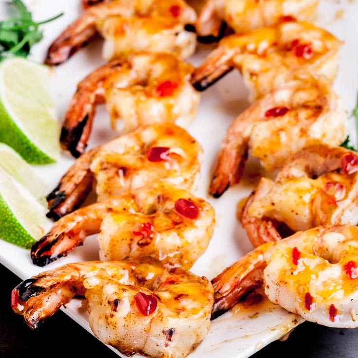

Spicy Thai Grilled Shrimp

Description
This Spicy Thai Grilled Shrimp is simply irresistible. The shrimp is absolutely succulent, tender,
and grilled to perfection in just 60 seconds. Thai style shrimp kebabs boast a nice kick (take down
the cayenne if you wish, but it’s sooo good the way it’s written.) They’re sweet, tangy, and 100%
yum.
The super fast cook time is one of the great virtues of shrimp – it cooks in a blink, which makes
it equally great for busy weeknights and weekend gatherings.
Ingredients
- 1 1/2 lbs jumbo shrimp, peeled and deveined, kept cold
- 4 TB salted butter, melted
- 1/4 tsp cayenne pepper
- Kosher salt
- 1/2 cup Thai sweet chili sauce
- 2 TB fresh lime juice
- 1 tsp lime zest
Steps
- Pat shrimp dry with paper towels and thread shrimp onto four 12-inch skewers (wood skewers must be
pre-soaked in water first.) Brush with 1 TB butter and season with cayenne and a pinch of salt on
both sides. Keep chilled until grill is ready.
- Heat Thai sweet chili sauce in a small saucepan over medium heat until bubbling. Off heat, whisk
in remaining butter, lime juice, and lime zest. Cover and keep warm.
- Grill shrimp over hot fire, about 30-60 seconds per side. Brush with glaze and serve immediately.